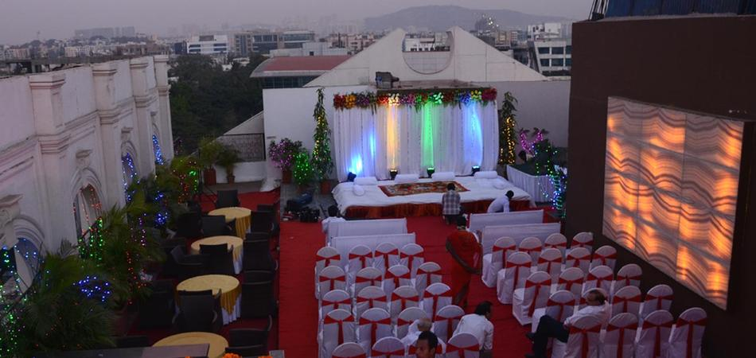

Goldfinch, Andheri East, Mumbai

About Goldfinch
Goldfinch, Andheri, Mumbai, has an elegant 3,000 sq. ft. banquet hall - Bay Leaf, that can host a large wedding or reception. The pillared space has understated décor in earthy tones and can be decorated to suit a wedding or a conference. Planning to have your wedding reception at the same venue? Consider the gorgeous terrace on the 8th floor of the 4-star hotel. It has an upper and lower deck, a sparkling pool and a lush garden area. The rooftop at Goldfinch is just as good for a cocktail party at sunset.
VEG: 650
NON VEG: 750
Taxes as applicable
Phone Number
+912233617229
Address
Plot No.34/21, Krantiveer Lakhuji Salve Marg, Mulgaon, Andheri East, Mumbai, Maharashtra 400093
Timings & Slots
Morning : 10:00 AM to 4:30 PM
Evening : 6:00 PM to 12:00 AM
Venue Closing Time : 12:00 AM
Changing Rooms
• Changing Rooms AC
• Number of complimentary changing rooms : 2
Landmark
MIDC
Chakala Metro Station